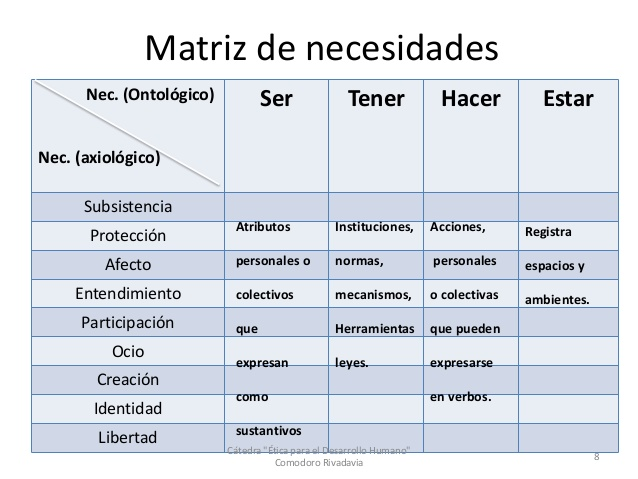

Ser y estar
“Soy Feliz” dicen algunos. A los que me conocen, y quiero, les digo “no se puede ser feliz”, y la razón es muy simple, la felicidad es un estado. Tu puedes estar feliz, pero no ser feliz.
Sin embargo decimos “estoy enamorado”, no tenemos problemas en admitir la temporalidad del amor, pero no la de la felicidad.
El español tiene esa ventaja de separar el verbo ser del verbo estar, algo que no tienen otros lenguajes. Esa es una herramienta muy poderosa, porque le da al pensamiento filosófico dinamismo. Si la lengua materna de Heiddeger hubiera sido el castellano su filosofía habría sido más simple, pero su juicio con respecto a la ontología es muy válido, y tiene que ver con la naturaleza estática de esta. Por eso que desconfío de las ontologías, porque no dan cuenta de la naturaleza dinámica de lss proceso, y llevan a un pensamiento estático, rígido.
Trataré de explicarme. Con respecto a la felicidad, la visión general es estática,ontológica y esto se refleja en el uso del verbo ser para referirse a esta cualidad: “uno debe ser feliz”, “hay que aspirar a la felicidad”, “hay que buscar la felicidad”, “tú me haces feliz”, “soy feliz”, etc. Pero la vida no es estática. Con una mirada dinámica, como es la vida, una mirada de proceso, el entendimiento es posible. Las cosas siempre cambian y no puedes controlar ese cambio, al entender eso las angustias empiezan a desaparecer.
Hoy estoy alegre, pero puede ocurrir algo en mi entorno que me saque de ese estado, y por supuesto mi reacción va a depender del estado en que me encuentre en ese momento. Si estoy estresado voy a reaccionar peor a una mala noticia, que si me encuentro calmado, o si estoy feliz el golpe puede ser más demoledor.
Cuando conversamos, el entendimiento de las palabras de nuestros interlocutores se afectan por nuestros estados internos, llevándonos a los malentendidos, o a los juicios incorrectos.
Veamos otro ejemplo. Hay un modelo de la motivación humana que se enseña actualmente sobretodo en las universidades, me refiero a la Pirámide de Maslow.

Esta teoría intenta explicar la motivación humana. Es un modelo estático y jerárquico, que defiende que “conforme se satisfacen las necesidades más básicas (parte inferior de la pirámide), los seres humanos desarrollan necesidades y deseos más elevados (parte superior de la pirámide).” Este modelo además se enseña mal, pero esa es harina de otro costal.
Lo que este modelo crea, inconscientemente, en quienes lo estudian, es una necesidad, la idea de que hay que ir quemando etapas para llegar a la cúspide de la “autorealización”. Es una ilusión dada por la naturaleza estática del modelo.
Sin embargo, si vemos las cosas en forma más dinámica, estas presiones por alcanzar el éxito desaparecen. El economista chileno, Manfred Max-Neef propone una lista más interesante para entender las motivaciones humanas: subsistencia, protección, afecto, entendimiento, participación, ocio, creación identidad y libertad (más tarde agregó la trascendencia), y propone organizarla en una matriz:

Es interesante el modelo de Max-Neef, es más tranquilizador, no impone esa presión de que hay que ser rico para ser feliz. Es un paso adelante hacia esta idea de dinamismo.
En informática usamos las máquinas de estado, las que nos permiten modelar las distintas etapas por las que se pasa en la ejecución de una secuencia de acciones.
Una máquina de estados es un modelo de comportamiento de un sistema con entradas y salidas. En este modelo las salidas no sólo dependen de las entradas, sino que del estado actual en que se encuentre la máquina.

Quizás un modelo de máquina de estado, o autómata no determinista puedan llegar a ser un mejor modelo de las motivaciones humanas. Les dejo tirada la idea, pero creo que es bueno partir del concepto de que estamos felices, o estamos tristes, en distintos tiempos, y que vamos cambiando y reaccionando a nuestro entorno, creo que ese pensamiento más dinámico es más sano a la larga, y permite enfrentar mejor la vida, al menos a mi me sirve.
Al final, y de acuerdo a la máxima mentat, no se puede entender la vida teorizando sobre ella, hay que moverse con el flujo del proceso, es decir, hay que vivir.